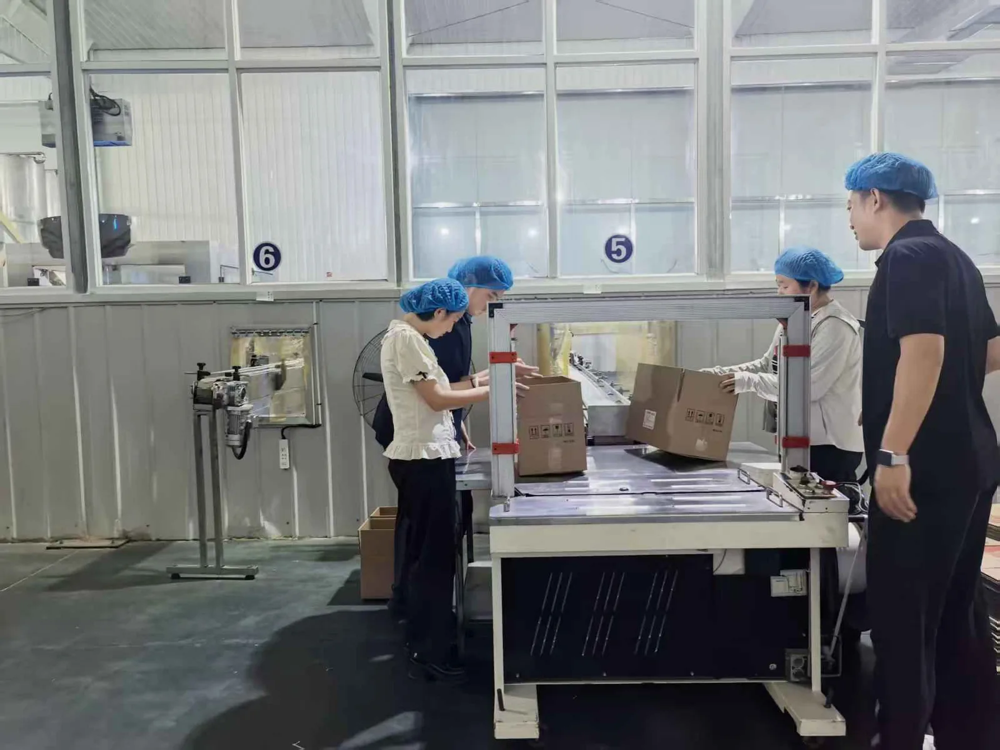

1 / 2
从分装细节观察传统风味如何进入标准化生产
邯郸 · 食品制造
京馨泉食品
老味道的新标准
泉
“芝麻油的香气没有变，生产它的方式正在变。”
标准生产地方品牌工艺传承
在生产现场，团队从原料、灌装、包装一路追踪到成品，看到传统食品工艺被拆解为可控制、可追溯的标准环节。
这种更新并不是抹去“老味道”，而是用设备、流程和品牌表达，让地方风味进入更稳定、更广阔的市场。
1 / 6
HANDAN · TWO WHEELS · ONE CITY
云游邯郸实践地图
两条路，读懂一座古城怎样向新而行。
FIELD NOTE 01
每一站都有现场影像、关键数据与一枚实践印章。

从分装细节观察传统风味如何进入标准化生产
邯郸 · 食品制造
老味道的新标准
“芝麻油的香气没有变，生产它的方式正在变。”
在生产现场，团队从原料、灌装、包装一路追踪到成品，看到传统食品工艺被拆解为可控制、可追溯的标准环节。
这种更新并不是抹去“老味道”，而是用设备、流程和品牌表达，让地方风味进入更稳定、更广阔的市场。
FIELD NOTE 02
OUR FINDING
六个地点看似不同，却沿着同一条逻辑前进：先让存量资源焕新，再把技术、资本与体验嵌入，形成可持续的地方能力，最终放大产业与文化价值。
FINAL STOP
再完成 6 站，即可解锁高清纪念票。